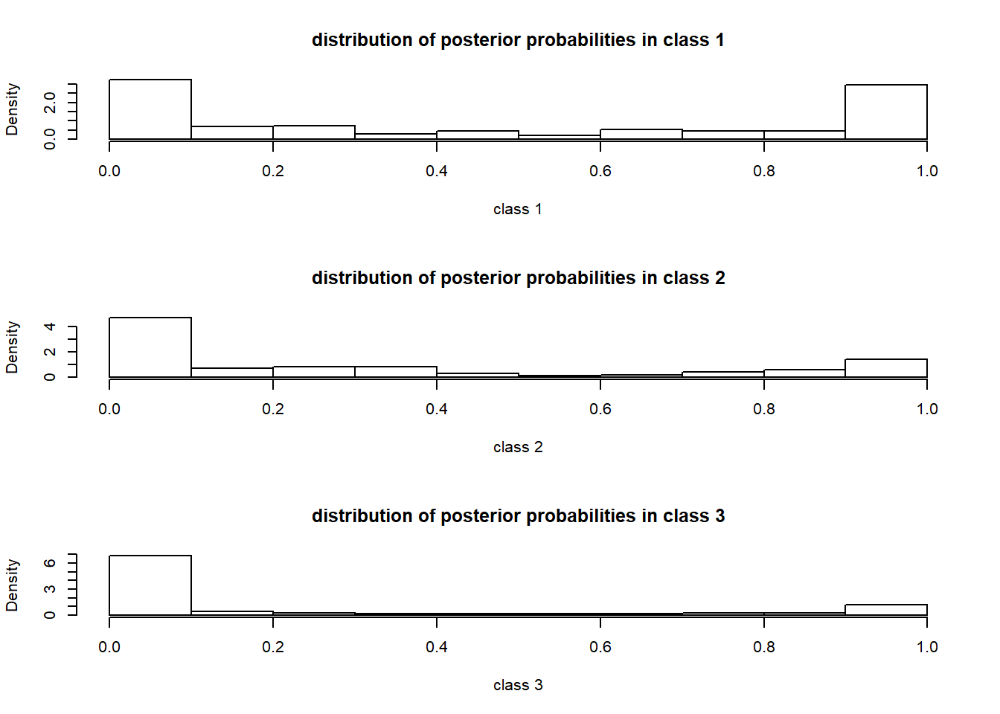
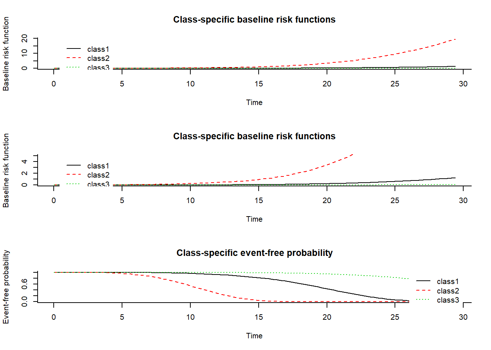

Last updated: 2021-06-07
Checks: 4 2
Knit directory: Collaborations/
This reproducible R Markdown analysis was created with workflowr (version 1.2.0). The Report tab describes the reproducibility checks that were applied when the results were created. The Past versions tab lists the development history.
The R Markdown file has unstaged changes. To know which version of the R Markdown file created these results, you’ll want to first commit it to the Git repo. If you’re still working on the analysis, you can ignore this warning. When you’re finished, you can run wflow_publish to commit the R Markdown file and build the HTML.
Great job! The global environment was empty. Objects defined in the global environment can affect the analysis in your R Markdown file in unknown ways. For reproduciblity it’s best to always run the code in an empty environment.
The command set.seed(20210523) was run prior to running the code in the R Markdown file. Setting a seed ensures that any results that rely on randomness, e.g. subsampling or permutations, are reproducible.
Great job! Recording the operating system, R version, and package versions is critical for reproducibility.
To ensure reproducibility of the results, delete the cache directory LCLDA_cache and re-run the analysis. To have workflowr automatically delete the cache directory prior to building the file, set delete_cache = TRUE when running wflow_build() or wflow_publish().
Great! You are using Git for version control. Tracking code development and connecting the code version to the results is critical for reproducibility. The version displayed above was the version of the Git repository at the time these results were generated.
Note that you need to be careful to ensure that all relevant files for the analysis have been committed to Git prior to generating the results (you can use wflow_publish or wflow_git_commit). workflowr only checks the R Markdown file, but you know if there are other scripts or data files that it depends on. Below is the status of the Git repository when the results were generated:
Ignored files:
Ignored: .Rhistory
Ignored: analysis/LCLDA_cache/
Unstaged changes:
Modified: analysis/LCLDA.Rmd
Note that any generated files, e.g. HTML, png, CSS, etc., are not included in this status report because it is ok for generated content to have uncommitted changes.
These are the previous versions of the R Markdown and HTML files. If you’ve configured a remote Git repository (see ?wflow_git_remote), click on the hyperlinks in the table below to view them.
| File | Version | Author | Date | Message |
|---|---|---|---|---|
| Rmd | 329ccd0 | han16 | 2021-06-02 | 6/2/2021 |
| html | 329ccd0 | han16 | 2021-06-02 | 6/2/2021 |
| html | b60ca2e | han16 | 2021-05-28 | 5/28/2021 |
| Rmd | a9361c8 | han16 | 2021-05-23 | 05/23/2021 |
| html | a9361c8 | han16 | 2021-05-23 | 05/23/2021 |
Review R for latent class growth analysis (LCGA) and/or growth mixture models (GMMs).
This function fits joint latent class mixed models for a longitudinal outcome and a right-censored (possibly left-truncated) time-to-event. The function handles competing risks and Gaussian or non Gaussian (curvilinear) longitudinal outcomes. For curvilinear longitudinal outcomes, normalizing continuous functions (splines or Beta CDF) can be specified as in lcmm.
Here is the Example.
#### Example of a joint latent class model estimated for a varying number
# of latent classes:
# The linear mixed model includes a subject- (ID) and class-specific
# linear trend (intercept and Time in fixed, random and mixture components)
# and a common effect of X1 and its interaction with time over classes
# (in fixed).
# The variance of the random intercept and slopes are assumed to be equal
# over classes (nwg=F).
# The covariate X3 predicts the class membership (in classmb).
# The baseline hazard function is modelled with cubic M-splines -3
# nodes at the quantiles- (in hazard) and a proportional hazard over
# classes is assumed (in hazardtype). Covariates X1 and X2 predict the
# risk of event (in survival) with a common effect over classes for X1
# and a class-specific effect of X2.
# !CAUTION: for illustration, only default initial values where used but
# other sets of initial values should be tried to ensure convergence
# towards the global maximum.## Not run:
#### estimation with 1 latent class (ng=1): independent models for the
# longitudinal outcome and the time of event
library(lcmm)
head(data_lcmm) ID Ydep1 Ydep2 Ydep3 Tentry Tevent Event Time X1 X2 X3 X4
1 1 11.1742 25 7 8.5552 12.0208 1 0.8555 1 1 0.1632 3
2 1 7.0532 20 1 8.5552 12.0208 1 1.0555 1 1 0.1632 3
3 1 11.3063 26 7 8.5552 12.0208 1 1.2021 1 1 0.1632 3
4 2 8.5895 22 3 6.7242 13.5959 1 0.6724 0 1 -0.7390 2
5 2 7.7670 21 2 6.7242 13.5959 1 0.8724 0 1 -0.7390 2
6 2 7.3881 20 2 6.7242 13.5959 1 1.0724 0 1 -0.7390 2 m1 <- Jointlcmm(fixed= Ydep1~X1*Time,random=~Time,subject='ID'
,survival = Surv(Tevent,Event)~ X1+X2 ,hazard="3-quant-splines"
,hazardtype="PH",ng=1,data=data_lcmm)Be patient, Jointlcmm is running ...
The program took 4.21 seconds summary(m1)Joint latent class model for quantitative outcome and competing risks
fitted by maximum likelihood method
Jointlcmm(fixed = Ydep1 ~ X1 * Time, random = ~Time, subject = "ID",
ng = 1, survival = Surv(Tevent, Event) ~ X1 + X2, hazard = "3-quant-splines",
hazardtype = "PH", data = data_lcmm)
Statistical Model:
Dataset: data_lcmm
Number of subjects: 300
Number of observations: 1678
Number of latent classes: 1
Number of parameters: 15
Event 1:
Number of events: 150
M-splines constant baseline risk function with nodes
0 11.3966 29.413
Iteration process:
Convergence criteria satisfied
Number of iterations: 21
Convergence criteria: parameters= 9.1e-09
: likelihood= 3.2e-07
: second derivatives= 4.6e-07
Goodness-of-fit statistics:
maximum log-likelihood: -3944.77
AIC: 7919.54
BIC: 7975.1
Score test statistic for CI assumption: 6.976 (p-value=0.0306)
Maximum Likelihood Estimates:
Parameters in the proportional hazard model:
coef Se Wald p-value
event1 +/-sqrt(splines1) -0.00001 0.08475 0.000 0.99993
event1 +/-sqrt(splines2) 0.00001 0.06756 0.000 0.99989
event1 +/-sqrt(splines3) 0.71713 0.08702 8.241 0.00000
event1 +/-sqrt(splines4) 0.97669 0.15657 6.238 0.00000
event1 +/-sqrt(splines5) 0.19832 1.09667 0.181 0.85649
X1 0.08281 0.16412 0.505 0.61388
X2 0.58993 0.17573 3.357 0.00079
Fixed effects in the longitudinal model:
coef Se Wald p-value
intercept 10.56723 0.15598 67.746 0.00000
X1 1.47700 0.21832 6.765 0.00000
Time -1.65870 0.17333 -9.570 0.00000
X1:Time -0.08096 0.24336 -0.333 0.73939
Variance-covariance matrix of the random-effects:
intercept Time
intercept 0.92403
Time 0.56427 1.22771
coef Se
Residual standard error 1.50045 0.02990 #Goodness-of-fit statistics for m1:
# maximum log-likelihood: -3944.77 ; AIC: 7919.54 ; BIC: 7975.09
## End(Not run)#### estimation with 2 latent classes (ng=2)
m2 <- Jointlcmm(fixed= Ydep1~Time*X1,mixture=~Time,random=~Time,
classmb=~X3,subject='ID',survival = Surv(Tevent,Event)~X1+mixture(X2),
hazard="3-quant-splines",hazardtype="PH",ng=2,data=data_lcmm,
B=c(0.64,-0.62,0,0,0.52,0.81,0.41,0.78,0.1,0.77,-0.05,10.43,11.3,-2.6,
-0.52,1.41,-0.05,0.91,0.05,0.21,1.5))Be patient, Jointlcmm is running ...
The program took 1.26 seconds summary(m2)Joint latent class model for quantitative outcome and competing risks
fitted by maximum likelihood method
Jointlcmm(fixed = Ydep1 ~ Time * X1, mixture = ~Time, random = ~Time,
subject = "ID", classmb = ~X3, ng = 2, survival = Surv(Tevent,
Event) ~ X1 + mixture(X2), hazard = "3-quant-splines",
hazardtype = "PH", data = data_lcmm)
Statistical Model:
Dataset: data_lcmm
Number of subjects: 300
Number of observations: 1678
Number of latent classes: 2
Number of parameters: 21
Event 1:
Number of events: 150
Proportional hazards over latent classes and
M-splines constant baseline risk function with nodes
0 11.3966 29.413
Iteration process:
Convergence criteria satisfied
Number of iterations: 2
Convergence criteria: parameters= 1.7e-07
: likelihood= 2.9e-05
: second derivatives= 1.4e-05
Goodness-of-fit statistics:
maximum log-likelihood: -3921.28
AIC: 7884.56
BIC: 7962.34
Score test statistic for CI assumption: 4.868 (p-value=0.0877)
Maximum Likelihood Estimates:
Fixed effects in the class-membership model:
(the class of reference is the last class)
coef Se Wald p-value
intercept class1 0.64179 0.23639 2.715 0.00663
X3 class1 -0.62135 0.18720 -3.319 0.00090
Parameters in the proportional hazard model:
coef Se Wald p-value
event1 +/-sqrt(splines1) -0.00007 0.02194 -0.003 0.99752
event1 +/-sqrt(splines2) -0.00014 0.04412 -0.003 0.99747
event1 +/-sqrt(splines3) 0.50421 0.10396 4.850 0.00000
event1 +/-sqrt(splines4) 0.80901 0.15970 5.066 0.00000
event1 +/-sqrt(splines5) 0.43681 0.39996 1.092 0.27477
event1 SurvPH class1 0.78331 0.35394 2.213 0.02689
X1 0.10318 0.16729 0.617 0.53739
X2 class1 0.76963 0.20998 3.665 0.00025
X2 class2 -0.04521 0.57232 -0.079 0.93703
Fixed effects in the longitudinal model:
coef Se Wald p-value
intercept class1 10.42612 0.19161 54.414 0.00000
intercept class2 11.29780 0.23627 47.816 0.00000
Time class1 -2.59556 0.17992 -14.426 0.00000
Time class2 -0.52342 0.17642 -2.967 0.00301
X1 1.41450 0.22174 6.379 0.00000
Time:X1 -0.04995 0.20647 -0.242 0.80886
Variance-covariance matrix of the random-effects:
intercept Time
intercept 0.91249
Time 0.05005 0.21387
coef Se
Residual standard error 1.50271 0.03000 #Goodness-of-fit statistics for m2:
# maximum log-likelihood: -3921.27; AIC: 7884.54; BIC: 7962.32## Not run:
#### estimation with 3 latent classes (ng=3)
m3 <- Jointlcmm(fixed= Ydep1~Time*X1,mixture=~Time,random=~Time,
classmb=~X3,subject='ID',survival = Surv(Tevent,Event)~ X1+mixture(X2),
hazard="3-quant-splines",hazardtype="PH",ng=3,data=data_lcmm,
B=c(0.77,0.4,-0.82,-0.27,0,0,0,0.3,0.62,2.62,5.31,-0.03,1.36,0.82,
-13.5,10.17,10.24,11.51,-2.62,-0.43,-0.61,1.47,-0.04,0.85,0.04,0.26,1.5))Be patient, Jointlcmm is running ...
The program took 3.44 seconds summary(m3)Joint latent class model for quantitative outcome and competing risks
fitted by maximum likelihood method
Jointlcmm(fixed = Ydep1 ~ Time * X1, mixture = ~Time, random = ~Time,
subject = "ID", classmb = ~X3, ng = 3, survival = Surv(Tevent,
Event) ~ X1 + mixture(X2), hazard = "3-quant-splines",
hazardtype = "PH", data = data_lcmm)
Statistical Model:
Dataset: data_lcmm
Number of subjects: 300
Number of observations: 1678
Number of latent classes: 3
Number of parameters: 27
Event 1:
Number of events: 150
Proportional hazards over latent classes and
M-splines constant baseline risk function with nodes
0 11.3966 29.413
Iteration process:
Convergence criteria satisfied
Number of iterations: 4
Convergence criteria: parameters= 1.5e-08
: likelihood= 5.5e-07
: second derivatives= 3.6e-09
Goodness-of-fit statistics:
maximum log-likelihood: -3890.05
AIC: 7834.1
BIC: 7934.1
Score test statistic for CI assumption: 0.637 (p-value=0.7274)
Maximum Likelihood Estimates:
Fixed effects in the class-membership model:
(the class of reference is the last class)
coef Se Wald p-value
intercept class1 0.75755 0.22144 3.421 0.00062
intercept class2 0.40955 0.24289 1.686 0.09177
X3 class1 -0.82323 0.21632 -3.806 0.00014
X3 class2 -0.27369 0.20651 -1.325 0.18506
Parameters in the proportional hazard model:
coef Se Wald p-value
event1 +/-sqrt(splines1) 0.00000 0.00422 0.000 0.99996
event1 +/-sqrt(splines2) 0.00000 0.00873 0.000 0.99998
event1 +/-sqrt(splines3) 0.00000 0.02982 0.000 0.99995
event1 +/-sqrt(splines4) 0.28375 0.11503 2.467 0.01364
event1 +/-sqrt(splines5) 0.63381 0.19734 3.212 0.00132
event1 SurvPH class1 2.63247 0.63228 4.163 0.00003
event1 SurvPH class2 5.39638 0.77249 6.986 0.00000
X1 -0.02725 0.21999 -0.124 0.90140
X2 class1 1.39796 0.34967 3.998 0.00006
X2 class2 0.81682 0.35742 2.285 0.02229
X2 class3 -13.49985 1168.06858 -0.012 0.99078
Fixed effects in the longitudinal model:
coef Se Wald p-value
intercept class1 10.16395 0.21251 47.829 0.00000
intercept class2 10.23943 0.32069 31.929 0.00000
intercept class3 11.51088 0.24745 46.517 0.00000
Time class1 -2.62195 0.18596 -14.100 0.00000
Time class2 -0.45529 0.42090 -1.082 0.27938
Time class3 -0.60547 0.18179 -3.331 0.00087
X1 1.47305 0.21607 6.818 0.00000
Time:X1 -0.03833 0.20286 -0.189 0.85015
Variance-covariance matrix of the random-effects:
intercept Time
intercept 0.85123
Time 0.03889 0.26245
coef Se
Residual standard error 1.49821 0.02975 #Goodness-of-fit statistics for m3:
# maximum log-likelihood: -3890.26 ; AIC: 7834.53; BIC: 7934.53 #### estimation with 4 latent classes (ng=4)
m4 <- Jointlcmm(fixed= Ydep1~Time*X1,mixture=~Time,random=~Time,
classmb=~X3,subject='ID',survival = Surv(Tevent,Event)~ X1+mixture(X2),
hazard="3-quant-splines",hazardtype="PH",ng=4,data=data_lcmm,
B=c(0.54,-0.42,0.36,-0.94,-0.64,-0.28,0,0,0,0.34,0.59,2.6,2.56,5.26,
-0.1,1.27,1.34,0.7,-5.72,10.54,9.02,10.2,11.58,-2.47,-2.78,-0.28,-0.57,
1.48,-0.06,0.61,-0.07,0.31,1.5))Be patient, Jointlcmm is running ...
The program took 29.71 seconds summary(m4)Joint latent class model for quantitative outcome and competing risks
fitted by maximum likelihood method
Jointlcmm(fixed = Ydep1 ~ Time * X1, mixture = ~Time, random = ~Time,
subject = "ID", classmb = ~X3, ng = 4, survival = Surv(Tevent,
Event) ~ X1 + mixture(X2), hazard = "3-quant-splines",
hazardtype = "PH", data = data_lcmm)
Statistical Model:
Dataset: data_lcmm
Number of subjects: 300
Number of observations: 1678
Number of latent classes: 4
Number of parameters: 33
Event 1:
Number of events: 150
Proportional hazards over latent classes and
M-splines constant baseline risk function with nodes
0 11.3966 29.413
Iteration process:
Convergence criteria satisfied
Number of iterations: 27
Convergence criteria: parameters= 1.3e-13
: likelihood= 2.3e-12
: second derivatives= 2.9e-10
Goodness-of-fit statistics:
maximum log-likelihood: -3886.79
AIC: 7839.57
BIC: 7961.8
Score test statistic for CI assumption: 0.346 (p-value=0.8409)
Maximum Likelihood Estimates:
Fixed effects in the class-membership model:
(the class of reference is the last class)
coef Se Wald p-value
intercept class1 0.53190 0.32076 1.658 0.09727
intercept class2 -0.43372 0.75859 -0.572 0.56750
intercept class3 0.37259 0.25690 1.450 0.14696
X3 class1 -0.94387 0.25600 -3.687 0.00023
X3 class2 -0.63606 0.31287 -2.033 0.04206
X3 class3 -0.28567 0.21009 -1.360 0.17392
Parameters in the proportional hazard model:
coef Se Wald p-value
event1 +/-sqrt(splines1) 0.00000 0.00472 0.000 1.00000
event1 +/-sqrt(splines2) 0.00000 0.00961 0.000 1.00000
event1 +/-sqrt(splines3) 0.00000 0.04907 0.000 1.00000
event1 +/-sqrt(splines4) 0.31294 0.13192 2.372 0.01768
event1 +/-sqrt(splines5) 0.59938 0.19425 3.086 0.00203
event1 SurvPH class1 2.61561 0.68727 3.806 0.00014
event1 SurvPH class2 2.60883 0.92254 2.828 0.00469
event1 SurvPH class3 5.35037 0.78683 6.800 0.00000
X1 -0.09760 0.23140 -0.422 0.67320
X2 class1 1.31521 0.45664 2.880 0.00397
X2 class2 1.37384 0.87222 1.575 0.11523
X2 class3 0.70985 0.38092 1.864 0.06239
X2 class4 -14.57316 920.84139 -0.016 0.98737
Fixed effects in the longitudinal model:
coef Se Wald p-value
intercept class1 10.53172 0.32863 32.047 0.00000
intercept class2 9.01620 0.63963 14.096 0.00000
intercept class3 10.21078 0.32767 31.162 0.00000
intercept class4 11.57527 0.23875 48.484 0.00000
Time class1 -2.46960 0.24244 -10.186 0.00000
Time class2 -2.78091 0.37351 -7.445 0.00000
Time class3 -0.31449 0.47183 -0.667 0.50508
Time class4 -0.57283 0.18600 -3.080 0.00207
X1 1.48476 0.21641 6.861 0.00000
Time:X1 -0.05422 0.20884 -0.260 0.79515
Variance-covariance matrix of the random-effects:
intercept Time
intercept 0.61385
Time -0.06706 0.30641
coef Se
Residual standard error 1.49827 0.02976 #Goodness-of-fit statistics for m4:
# maximum log-likelihood: -3886.93 ; AIC: 7839.86; BIC: 7962.09##### The model with 3 latent classes is retained according to the BIC
##### and the conditional independence assumption is not rejected at
##### the 5% level.
# posterior classification
plot(m3,which="postprob")
# Class-specific predicted baseline risk & survival functions in the
# 3-class model retained (for the reference value of the covariates)
plot(m3,which="baselinerisk",bty="l")
plot(m3,which="baselinerisk",ylim=c(0,5),bty="l")
plot(m3,which="survival",bty="l")
# class-specific predicted trajectories in the 3-class model retained
# (with characteristics of subject ID=193)
data <- data_lcmm[data_lcmm$ID==193,]
plot(predictY(m3,var.time="Time",newdata=data,bty="l"))
# predictive accuracy of the model evaluated with EPOCE
vect <- 1:15
cvpl <- epoce(m3,var.time="Time",pred.times=vect)Be patient, epoce function is running ...
The program took 2.18 seconds summary(cvpl)Expected Prognostic Observed Cross-Entropy (EPOCE) of the joint latent class model:
Jointlcmm(fixed = Ydep1 ~ Time * X1, mixture = ~Time, random = ~Time,
subject = "ID", classmb = ~X3, ng = 3, survival = Surv(Tevent,
Event) ~ X1 + mixture(X2), hazard = "3-quant-splines",
hazardtype = "PH", data = data_lcmm)
EPOCE estimators on data used for estimation:
Mean Prognostic Observed Log-likelihood (MPOL)
and Cross-validated Prognostic Observed Log-likelihood (CVPOL)
(CVPOL is the bias-corrected MPOL obtained by approximated cross-validation)
pred. times N at risk N events MPOL CVPOL
1 300 150 1.738399 1.777393
2 300 150 1.737965 1.776959
3 299 150 1.826216 1.854454
4 296 150 1.949889 1.982856
5 291 149 2.017342 2.042650
6 275 139 2.015116 2.032020
7 258 127 1.815015 1.828040
8 229 116 1.840203 1.848909
9 205 107 1.883315 1.900622
10 184 97 1.914311 1.923069
11 158 81 1.712072 1.730462
12 143 75 1.695110 1.707581
13 129 68 1.779851 1.777540
14 116 59 1.390196 1.411671
15 99 49 1.492159 1.490220
plot(cvpl,bty="l",ylim=c(0,2))
############## end of example ##############
## End(Not run)lcmm R package can fit both GMM and LCGA
it handles both continuous longitudinal outcomes (Gaussian or non-Gaussian) as well as bounded quantitative, discrete and ordinal longitudinal outcomes
program also works when no random-effect is included
As in Laird and Ware (1982), define linear mixed model
\[Y_{ij}=X_{Li}(t_{ij})^T\beta+Z_i(t_{ij})^Tu_i+w_i(t_{ij})+\epsilon_{ij}\]
Aim: to estimate \((\beta, vec(B), \sigma_{\epsilon}^2, \sigma_w^2)\).
Define it without measurement error
\[\Lambda_{i}(t)=X_{Li}(t)^T\beta+Z_i(t)^Tu_i+w_i(t)\] to define a flexible nonlinear measurement error model
\[Y_{ij}=H(\Lambda_i(t_{ij})+\epsilon_{ij}, \eta)\] \(H\) is a paramerized link function and for a quantitative marker, \(H^{-1}\) could be a monotone increasing function.
This example is from here
library(lcmm)
#### Estimation of homogeneous mixed models with different assumed link
#### functions, a quadratic mean trajectory for the latent process and
#### correlated random intercept and slope (the random quadratic slope
#### was removed as it did not improve the fit of the data).
#### -- comparison of linear, Beta and 3 different splines link functions --
# linear link function
m10<-lcmm(Ydep2~Time+I(Time^2),random=~Time,subject='ID',ng=1,
data=data_lcmm,link="linear")
#summary(m10)# Beta link function
m11<-lcmm(Ydep2~Time+I(Time^2),random=~Time,subject='ID',ng=1,
data=data_lcmm,link="beta")
#summary(m11)
#plot(m11,which="linkfunction",bty="l")# I-splines with 3 equidistant nodes
m12<-lcmm(Ydep2~Time+I(Time^2),random=~Time,subject='ID',ng=1,
data=data_lcmm,link="3-equi-splines")
#summary(m12)
# I-splines with 5 nodes at quantiles
m13<-lcmm(Ydep2~Time+I(Time^2),random=~Time,subject='ID',ng=1,
data=data_lcmm,link="5-quant-splines")
#summary(m13)
# I-splines with 5 nodes, and interior nodes entered manually
m14<-lcmm(Ydep2~Time+I(Time^2),random=~Time,subject='ID',ng=1,
data=data_lcmm,link="5-manual-splines",intnodes=c(10,20,25))
#summary(m14)
#plot(m14,which="linkfunction",bty="l")# Thresholds
# Especially for the threshold link function, we recommend to estimate
# models with increasing complexity and use estimates of previous ones
# to specify plausible initial values (we remind that estimation of
# models with threshold link function involves a computationally demanding
# numerical integration -here of size 3)
m15<-lcmm(Ydep2~Time+I(Time^2),random=~Time,subject='ID',ng=1
,data=data_lcmm,link="thresholds",maxiter=100,
B=c(-0.8379, -0.1103, 0.3832, 0.3788 , 0.4524, -7.3180, 0.5917, 0.7364,
0.6530, 0.4038, 0.4290, 0.6099, 0.6014 , 0.5354 , 0.5029 , 0.5463,
0.5310 , 0.5352, 0.6498, 0.6653, 0.5851, 0.6525, 0.6701 , 0.6670 ,
0.6767 , 0.7394 , 0.7426, 0.7153, 0.7702, 0.6421))
#summary(m15)
#plot(m15,which="linkfunction",bty="l")
Warning: The above code chunk cached its results, but it won’t be re-run if previous chunks it depends on are updated. If you need to use caching, it is highly recommended to also set knitr::opts_chunk$set(autodep = TRUE) at the top of the file (in a chunk that is not cached). Alternatively, you can customize the option dependson for each individual chunk that is cached. Using either autodep or dependson will remove this warning. See the knitr cache options for more details.
#### Plot of estimated different link functions:
#### (applicable for models that only differ in the "link function" used.
#### Otherwise, the latent process scale is different and a rescaling
#### is necessary)
plot(m10,which="linkfunction",col=1,xlab="latent process",ylab="marker",
bty="l",xlim=c(-10,5),legend=NULL)
plot(m11,which="linkfunction",add=TRUE,col=2,legend=NULL)
plot(m12,which="linkfunction",add=TRUE,col=3,legend=NULL)
plot(m13,which="linkfunction",add=TRUE,col=4,legend=NULL)
plot(m14,which="linkfunction",add=TRUE,col=5,legend=NULL)
plot(m15,which="linkfunction",add=TRUE,col=6,legend=NULL)
legend(x="bottomright",legend=c("linear","beta","spl_3e","spl_5q","spl_5m","thresholds"),
col=1:6,lty=1,inset=.02,box.lty=0)#### Estimation of 2-latent class mixed models with different assumed link
#### functions with individual and class specific linear trend
#### for illustration, only default initial values where used but other
#### sets of initial values should also be tried to ensure convergence
#### towards the golbal maximum
# Linear link function
m20<-lcmm(Ydep2~Time,random=~Time,subject='ID',mixture=~Time,ng=2,
idiag=TRUE,data=data_lcmm,link="linear",B=c(-0.98,0.79,-2.09,
-0.81,0.19,0.55,24.49,2.24))
#summary(m20)
#postprob(m20)# Beta link function
m21<-lcmm(Ydep2~Time,random=~Time,subject='ID',mixture=~Time,ng=2,
idiag=TRUE,data=data_lcmm,link="beta",B=c(-0.1,-0.56,-0.4,-1.77,
0.53,0.14,0.6,-0.83,0.73,0.09))
summary(m21)
postprob(m21)# I-splines link function (and 5 nodes at quantiles)
m22<-lcmm(Ydep2~Time,random=~Time,subject='ID',mixture=~Time,ng=2,
idiag=TRUE,data=data_lcmm,link="5-quant-splines",B=c(0.12,0.63,
-1.76,-0.39,0.51,0.13,-7.37,1.05,1.28,1.96,1.3,0.93,1.05))
summary(m22)
postprob(m22)
data <- data_lcmm[data_lcmm$ID==193,]
plot(predictL(m22,var.time="Time",newdata=data,bty="l"))
head(m22$pprob)kml3d is a new implementation of k-means for longitudinal data (or trajectories).
This is the example
library(kml3d)
### Generation of some data
cld1 <- generateArtificialLongData3d(15)
cld1### We suspect 2, 3, 4 or 5 clusters, we want 3 redrawing.
### We want to "see" what happen (so toPlot="both")
kml3d(cld1,2:5,3,toPlot="both")
### 3 seems to be the best.
### We don't want to see again, we want to get the result as fast as possible.
### Just, to check the overall process, we plot the criterion evolution
kml3d(cld1,3,10,toPlot="criterion")library(kml3d)
# NOT RUN {
### 1. Data Preparation
data(pregnandiol)
head(pregnandiol)
names(pregnandiol)
cld3dPregTemp <- cld3d(pregnandiol,timeInData=list(temp=1:30*2,preg=1:30*2+1))
### 2. Building "optimal" clusteration (with only 2 redrawings)
### Real analysis needs at least 20 redrawings
kml3d(cld3dPregTemp,3:5,nbRedrawing=2,toPlot="both")
### 3. Exporting results
try(choice(cld3dPregTemp))
### 4. Visualizing in 3D
plotMeans3d(cld3dPregTemp,4)
# }
sessionInfo()R version 3.5.1 (2018-07-02)
Platform: x86_64-apple-darwin15.6.0 (64-bit)
Running under: macOS High Sierra 10.13.6
Matrix products: default
BLAS: /Library/Frameworks/R.framework/Versions/3.5/Resources/lib/libRblas.0.dylib
LAPACK: /Library/Frameworks/R.framework/Versions/3.5/Resources/lib/libRlapack.dylib
locale:
[1] en_US.UTF-8/en_US.UTF-8/en_US.UTF-8/C/en_US.UTF-8/en_US.UTF-8
attached base packages:
[1] stats graphics grDevices utils datasets methods base
other attached packages:
[1] lcmm_1.8.1 survival_3.1-8
loaded via a namespace (and not attached):
[1] whisker_0.3-2 knitr_1.32 magrittr_2.0.1 workflowr_1.2.0
[5] splines_3.5.1 lattice_0.20-38 rlang_0.4.10 fansi_0.4.0
[9] highr_0.7 stringr_1.4.0 tools_3.5.1 grid_3.5.1
[13] xfun_0.22 utf8_1.1.4 git2r_0.24.0 htmltools_0.5.1.1
[17] ellipsis_0.3.0 yaml_2.2.0 digest_0.6.27 rprojroot_1.3-2
[21] tibble_3.1.1 lifecycle_1.0.0 crayon_1.4.1 Matrix_1.2-15
[25] vctrs_0.3.7 fs_1.5.0 glue_1.3.2 evaluate_0.13
[29] rmarkdown_1.11 stringi_1.3.1 compiler_3.5.1 pillar_1.6.0
[33] backports_1.1.3 pkgconfig_2.0.2